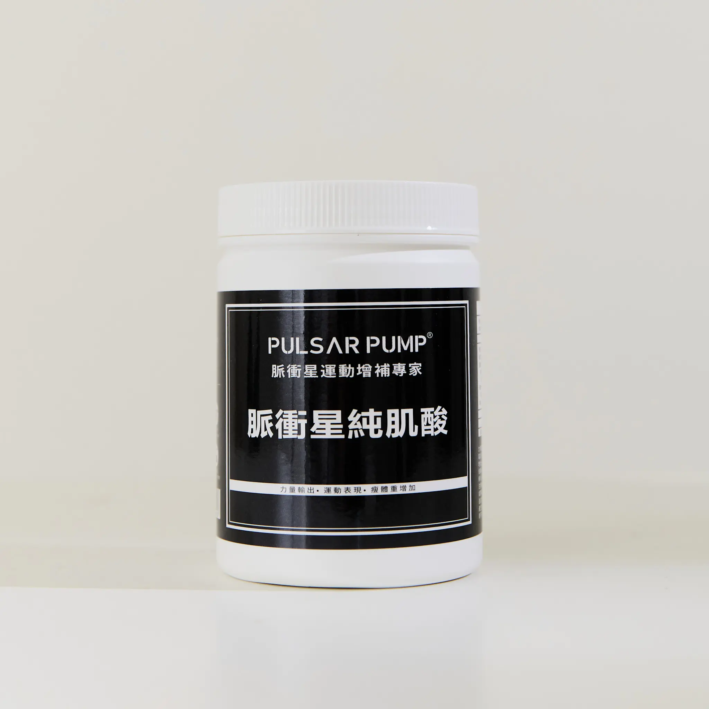

補充磷酸肌酸儲量，讓每一次高強度輸出後的恢復更快、下一組的品質更穩定。

WHY CREATINE
脈衝星純肌酸只有一個成分——100% Creatine Monohydrate。不添加任何抗結塊劑、流動劑或人工香料。每一次補充，你攝取到的就是純粹的肌酸。
肌酸一水合物是目前運動科學實證最充分的單一補充成分之一，超過 30 年、500 篇以上人體試驗的研究累積。與安慰劑相比，4–12 週的補充可獲得兩倍瘦體重增長，同時提升肌力 5% 至 15%。
微粉化處理讓溶解度更好，喝起來沒有顆粒感。可以快速通過胃，避免在胃裡滯留轉化成無效的肌酸酐，胃比較敏感的人也能放心使用。
HOW IT WORKS
衝刺、最大重量、快速變向——這些動作的能量來自 ATP。磷酸肌酸的角色是在毫秒內把磷酸根轉移給 ADP，讓 ATP 快速再合成。
肌酸儲量愈高，這個過程愈快、愈穩定，意味著每一組的後半段、每次訓練的後期，你仍然能維持應有的輸出品質。
健身重訓、短跑爆發、耐力運動員、素食者（植物性飲食較難從食物中攝取足量肌酸）、希望維持認知表現的長期訓練者。
HOW TO USE
肌酸效果來自肌肉內持續穩定的高儲量，規律補充比時機更重要。
每天 5g × 4 次，持續 5–7 天。搭配碳水化合物飲品（如果汁）可提升吸收效率。
一天一次，運動後補充效果較佳。不需要停藥期，可長期連續補充。
運動後胃島素等合成代謝激素會升高，這時補充肌酸，胃島素會幫助肌酸更有效地進入肌肉細胞。若更方便，訓練前補充對阻力訓練也有幫助——該怏點可依個人習慣調整。
「肌酸是目前我最有把握推薦給訓練者的單一補充品——實證充分、安全性高、機制清楚。選擇的關鍵只有一個：原料純度，以及你是否知道這批原料通過了什麼樣的製造標準。」
| 品名 | 脈衝星純肌酸 Creatine Monohydrate |
|---|---|
| 成分 | 肌酸一水合物（Creatine Monohydrate） |
| 淨重 | 350 公克（70 份），附量匙（5g／匙） |
| 原料純度 | 99.95%（規格要求 ≥ 99.90%） |
| 製造標準 | NSF 認證 · FDA 21 CFR Part 111 & 117 |
| 添加物 | 無（不含抗結塊劑、流動劑） |
| 適合族群 | 健身者、耐力運動員、素食者 |
| 產地 | 臺灣 |
| 保存方式 | 密封存放於乾燥陰涼處，避免蒸氣與直射日光 |